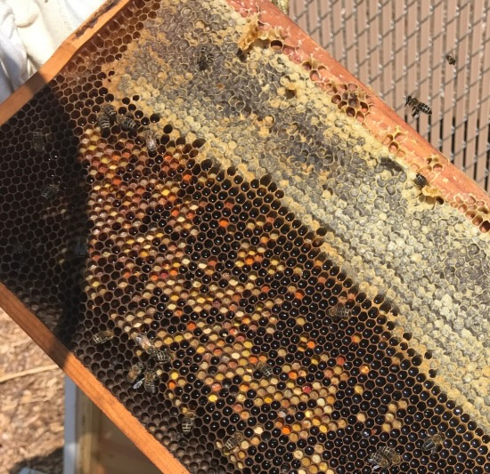
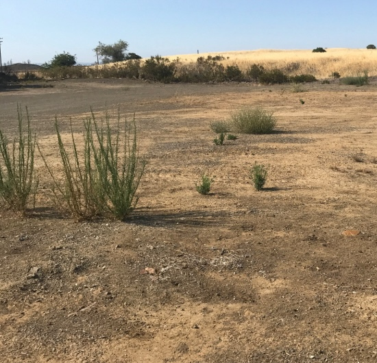
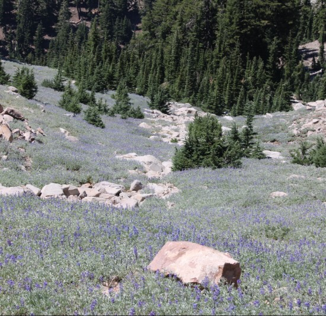
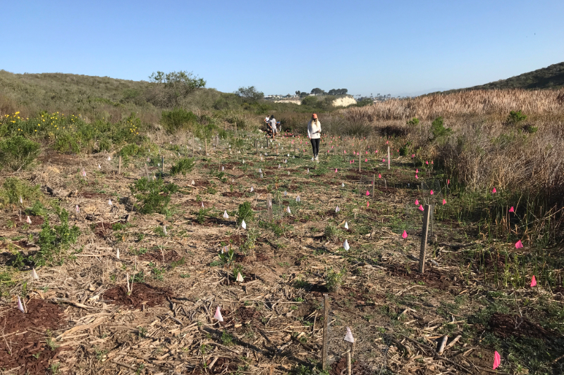
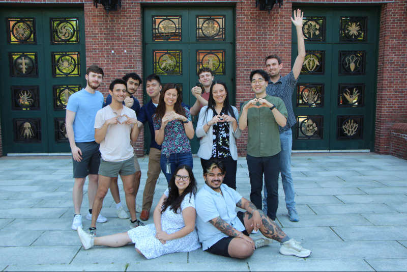
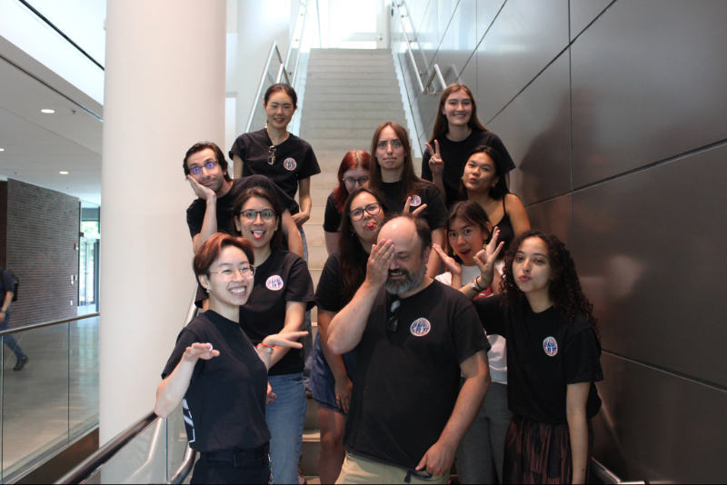
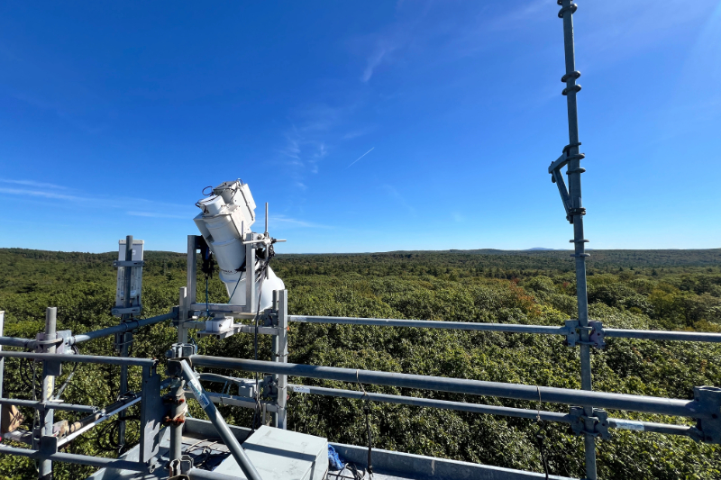
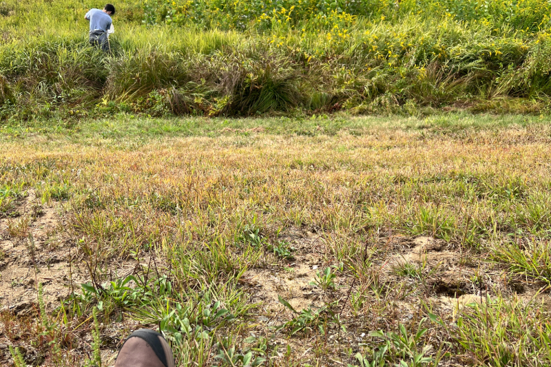

Research

My interest in insects began during my undergraduate years, when I worked in an apiary studying honeybee behavior and hive dynamics. Watching how colonies organized themselves — how individuals made small decisions that scaled into collective order — was what first drew me to questions about social behavior. It taught me to see insects not just as individuals, but as part of coordinated systems shaped by their environment.
That early fascination with collective behavior and ecology would eventually guide much of the work I do today, though it’s taken a few detours along the way.

After college, I moved to Northern California, where I studied post-fire recovery and vegetation change across burned landscapes. Working in fire ecology deepened my interest in how disturbance shapes communities — both structurally and behaviorally. I spent long days in fields and forests watching ecosystems rebuild, documenting how plants, insects, and soil recovered at different scales. Those experiences made me think more critically about resilience: what it means for living systems to adapt to instability.


After my fieldwork in Northern California, I spent some time outside academia, working on coastal restoration and conservation projects. I missed research, but I also gained perspective — learning how applied ecological work fits into broader environmental and social systems. It gave me a new appreciation for the interface between science and practice, and reminded me that data is most powerful when it connects back to the real landscapes it comes from.

When I returned to research, I joined the Nett Lab at Harvard University, where I worked on plant biosynthesis. Studying how plants produce complex compounds introduced me to a very different kind of biological problem — one rooted in chemistry and molecular pathways rather than movement and behavior. That experience taught me to think across scales: from molecular reactions to ecosystem processes, from genes to gestures.

Now, I’m a PhD student in the de Bivort Lab, where I study insect locomotion and collective behavior across evolutionary timescales. My research combines computational ethology and remote sensing to understand how environmental change influences animal movement. I use behavioral tracking and statistical modeling to uncover how movement patterns evolve, and how they signal adaptation to changing conditions.


Along the way, I’ve been lucky to work with incredible mentors and peers who share a love of asking big questions through small creatures. My research is driven by the idea that movement — whether in a colony, a population, or an ecosystem — can reveal how life adapts, persists, and reorganizes in a changing world.